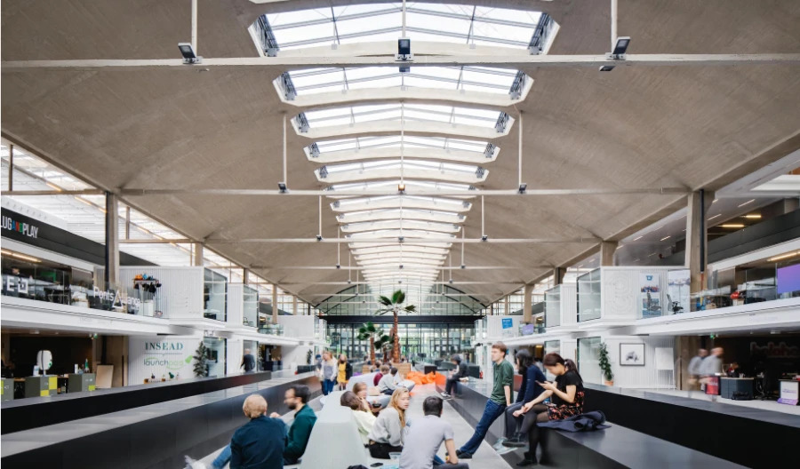

Plus grand campus de start-up du monde à Paris
Rejoignez un campus unique et une communauté de plus de 1.000 start-up, 30 programmes d'accompagnement et de nombreux services au coeur de Paris.
""""Arrow-to-down"""" Donner le pouvoir à la prochaine génération d'entrepreneurs
Avec des ressources disponibles sur le campus et en ligne - dont une large communauté d'investisseurs, plus de 150 perks, 35 administrations publiques et 600 événements par an - STATION F offre tout ce dont les entrepreneurs ont besoin pour lancer et développer leurs projets.
Trouver mon programme
Launch by STATION F
Vous avez une idée ? Vous souhaitez lancer votre start-up ou en apprendre plus sur l'entrepreneuriat ? Launch by STATION F est le programme 100% en ligne de STATION F sur tous les sujets pour se lancer ! Le programme regroupe de nombreux cours en vidéo, une large librairie d'outils avec des accès à prix réduit et une communauté pour vous aider avec votre idée.
DécouvrirEntrepreneurs & Start-up


Dernières actualités
Voir plus

Logement
Accéder à des logements abordables et flexibles est un véritable challenge pour les entrepreneurs, particulièrement lorsqu'ils viennent de l'étranger. Flatmates, l'extension de co-living de STATION F, est la meilleure solution pour trouver un logement à Paris, avec plus de 600 chambres pour les entrepreneurs.
Découvrir flatmates
Événements